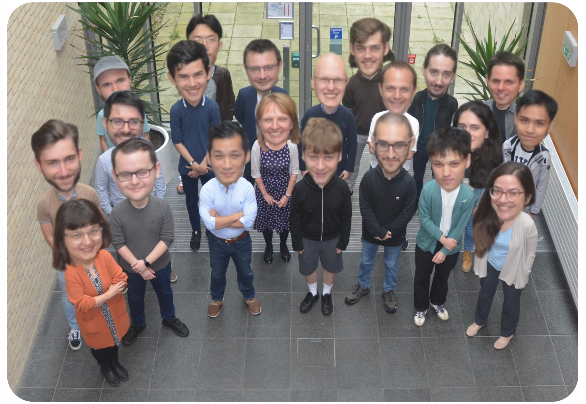

SLS Schedule
This page details the 2024 Student Led Symposium (SLS) schedule, to the extent it is currently known. Question marks indicate uncertainty, no question mark means the schedule is confirmed. Scroll down and you may see yourself.
The Semester One schedule is jointly overseen by Benjamin Dutton and Aengus Roberts.
Semester One
| Date | Primary/Backup | Time | Location | Speaker(s) | Topic(s) |
|---|---|---|---|---|---|
| Week 1 03/10/24 | N/A | 13:15 | 4E 3.19 | Dr Phil Trinh Dr Marcel Ortgiese |
Introduction to SLS. |
| Week 2 10/10/24 | Harry Semple/ Josh Payne |
13:15 | 4E 3.19 | Bill Nunn | Basic Git and GitHub. A website. |
| Week 3 17/10/24 | John Carlo Dimaculangan/ Bence Kaszás |
13:15 | 4E 3.19 | Dr Phil Trinh Dr Marcel Ortgiese Cecilie Andersen |
Life as a PhD Student. Software/Literature tools. Time Management. |
| Week 4 05/11/24 | Clara Hawkins/ Veronica Raffetto |
15:15 | 8W 2.28 | Jenny Power | How to give a good talk. |
| Week 5 31/10/24 | James Treisman/ Harry Semple |
14:15 | 4E 3.19 | Dr Eike Mueller Kamran Arora Oliver Townsend |
HPC demonstration. |
| Week 6 07/11/24 | Peter Crew/ Fernando Perazzo |
14:15 | 4E 3.19 | Paddy O’Toole | Advanced version control. |
| Week 7 14/11/24 | Fernando Perazzo/ James Treisman |
13:15 | 4E 3.19 | Prof. Julian Faraway | Exploratory data visualisation. |
| Week 8 21/11/24 | Wenzhi Zhong/ Clara Hawkins |
13:15 | 4E 3.19 | Dr. Abdalaziz Hamdan Prof. Tristan Pryer |
Firedrake and finite element methods. |
| Week 9 28/11/24 | Josh Payne/ John Carlo Dimaculangan |
13:15 to 15:15 | 4W 1.1 | Diamond Light Source Julia Parker Paul Quinn |
ITT 1 Introductory Event. |
Week 10 13/12/24 |
Bence Kaszás/ Peter Crew |
14:00 to 16:00 (starting on the hour) |
4W 1.1 | Novartis | ITT 1 Introductory Event. |
| Week 11 10/12/24 | Veronica Raffetto/ Wenzhi Zhong |
15:15 | 8W 2.28 | Timothy Peters | What to do during an ITT. |
| Week 11 12/12/24 | Benjamin Dutton/ Aengus Roberts |
13:15 to 14:00 | 4W 4.8 | Dr Christian Rohrbeck Dr Theresa Smith |
Semester 2 Project Q&A Session. |
| 09/01/25 | Joshua Payne /Bence Kaszas | 13:15 to 15:00 | 3E 3.19 | Oliver Townsend Samuel Mccallum Samuel Williams |
ITT preparation |
Semester Two
The Semester Two schedule is overseen by James Treisman.
| Date | Primary/Backup | Time | Location | Speaker(s) | Topic(s) |
|---|---|---|---|---|---|
| Week 1 04/02/25 | N/A | 14:15 | 8W 2.29 | Dr Marcel Ortgiese Dr Phil Trinh |
Semester Two discussion |
| Week 2 13/02/25 | Bence Kaszás | 13:15 | 10W 2.02 | Dr Phil Trinh | Paper criticism |
| Week 3 20/02/25 | Josh Payne | 13:15 | 10W 2.02 | Aengus Roberts Benjamin Dutton Harry Semple Josh Payne Dr Ben Adams |
All things GenAI |
Week 4 27/02/25 |
Peter Crew | 13:15 | 10W 2.02 | Prof. Gregory Sankaran; Kamran Arora, Charlie Cameron, Caroline Purvis |
Supervisory relationship |
| Week 5 | Harry Semple | 14:15 (Tuesday Week 6) |
8W 2.29 | Eric Hester | Scientific Visualisation |
| Week 6 | Veronica Raffetto | ? | ? | ? | Posters Internships |
| Week 7 | Benjamin Dutton | 18th: 14:15 - 15:15 20th: 13:15 |
8W 2.29 10W 2.02 |
SAMBa Cohort 11 Prof. Kit Yates |
ITT Representations Reading papers |
| Week 8 | Wenzhi Zhong | 13:15 Thursday | 10W 2.02 | SAMBA Cohort 11 | ITT representations |
| Week 9 | Clara Hawkins | ? | ? | ? | Writing |
| Week 10 | John Carlo Dimaculangan | ? | ? | ? | ITT partner 1 |
| Week 11 | Fernando Perazzo | ? | ? | ? | ITT partner 2 |
| Week 12 | Aengus Roberts | ? | ? | ? | Reflections for next year |

Artwork by James Treisman (MEng), circa 2025.
© James Treisman Enterprises, 2025. All rights reserved.